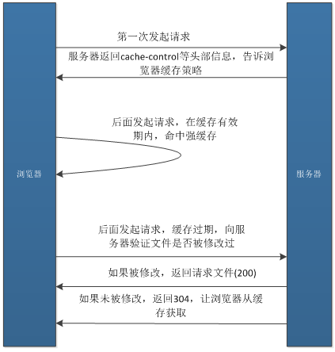
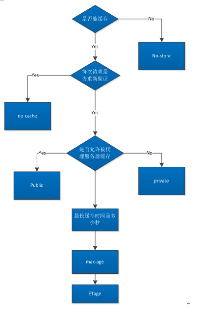

理解浏览器缓存机制
介绍
浏览器缓存可以提高网页打开速度、减少 Http 请求，在提高用户体验、重复利用资源、减少网络带宽上发挥着重要的作用。特别是现在用户对网站响应速度要求特别高的情况下，高效地利用浏览器缓存机制可以使网站性能优化事半功倍。
下面对浏览器缓存机制做一些分析。
概念
HTTP缓存可以分为强缓存和协商缓存:
强缓存：强缓存命中不会发送请求到服务器端，直接从本地缓存中获取资源，状态码200 ( from cache )协商缓存：协商缓存会发送请求到服务器，服务器通过请求头部字段来验证资源是否命中协商缓存，如果命中，则返回状态码304 ( not modified )，通知浏览器从缓存中获取资源。
示意图

分析
根据响应头部的字段确定浏览器缓存策略
响应头中与缓存策略相关的字段包括 Cache-Control, Pragma, Expires, 下面分析这三个字段。
Cache-Control
Cache-Control 是 Http/1.1 新增的字段，是控制浏览器缓存的主要字段。它的主要内容如下：
no-cache：资源可以被缓存，但立刻过期，下次访问必须验证资源有效性max-age：缓存资源，在指定时间后过期(单位为秒)no-store：资源不会被缓存public：资源可以被浏览器和代理服务器缓存private： 资源只能被浏览器缓存
Pragma
Pragma 是 Http/1.0 的头部字段，只有一个值 no-cache， 功能和 Cache-Control:no-cache 一样。
Expires
Expires 是缓存到期时间，以服务器时间为参考，优先级比 Cache-Control: max-age 低。
在一些场景中必须避免浏览器缓存，推荐的做法是设置请求头：Cache-Control: no-cache, no-store, must-revalidate
强缓存命中条件
我们会发现，最优的做法是让一些公开资源命中强缓存，这是响应最快的。那么命中强缓存的条件又是什么呢？
- 请求头部不包括
Pragma字段 - 响应头部
Cache-Control中不包括no-cache、no-store - 响应头部
max-age或者Expires大于请求日期
如果我们在很短的一段时间内多次访问同一个资源，并且响应头部却没有 max-age 或者 Expires 信息，是不是就不会命中强缓存了呢？不是的，浏览器会做出优化，默认采用一个启发式算法，取响应头的 (Date - Last-Modified) * 0.1 作为缓存有效时间，只要是在这段时间内请求这个资源，即使没有缓存过期字段，也会命中强缓存。
服务器端校验资源是否修改机制
Last-Modified/If-Modified-Since
服务器响应资源的时候返回一个头部字段 Last-Modified，代表该资源最后修改时间，当浏览器再次向服务器请求该资源时，会传送 If-Modified-Since 信息，值就是上次服务器响应的最后修改时间， 服务器将这个请求时间与本地资源实际最后修改时间做对比，如果文件没有被修改，则返回状态码 304，通知浏览器从缓存中读取资源文件。
ETag/If-None-Match
ETag 是一个响应首部字段，它是根据资源内容生成的一段hash字符串，标识资源的状态，由服务端产生。当浏览器再次向服务器请求该资源时，会传送 If-None-Match 字段，服务器收到请求后，拿 If-None-Match 字段的值与资源的实际 ETage 值进行比较，若相同，则命中协商缓存，返回状态码 304。ETag 优先级比 Last-Modified 高，同时存在时会以ETag 为准。
那已经有了 Last-Modified 机制，为什么要引入 ETage 机制呢？
- 某些服务器不能精确得到资源的最后修改时间，这样就无法通过最后修改时间判断资源是否更新
- 如果资源修改非常频繁，在秒以下的时间内进行修改，而
Last-Modified只能精确到秒 - 一些资源的最后修改时间改变了，但是内容没改变，使用
ETag就能判别出资源内容是否被修改
浏览器缓存的使用
使用缓存的过程其实就是根据场景设置 Cache-Control 的值的过程：
